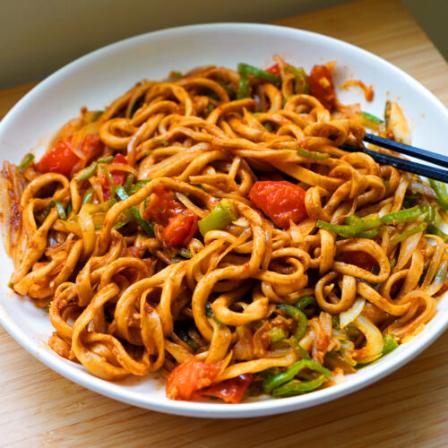

Noodles

- Noodles
- Water
- Masala powders
- Small amount of oil
Steps
- Take a pan or whatever which can able to make noodles
- boil some water in it
- if the bubbles started popup, put the noodles in it
- mix well and add our noodles masala in it
- wait until the water almost dissapear
- and serve it on a bowl with a chopstick :)
Home